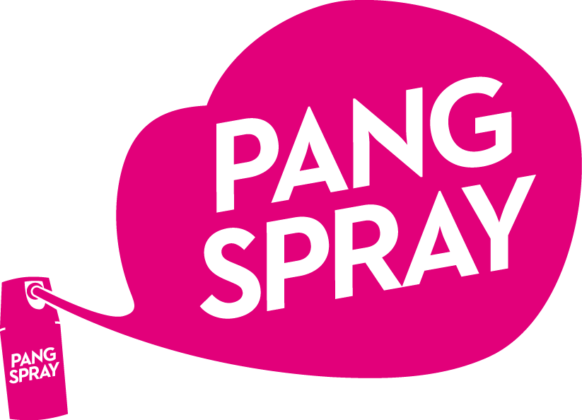
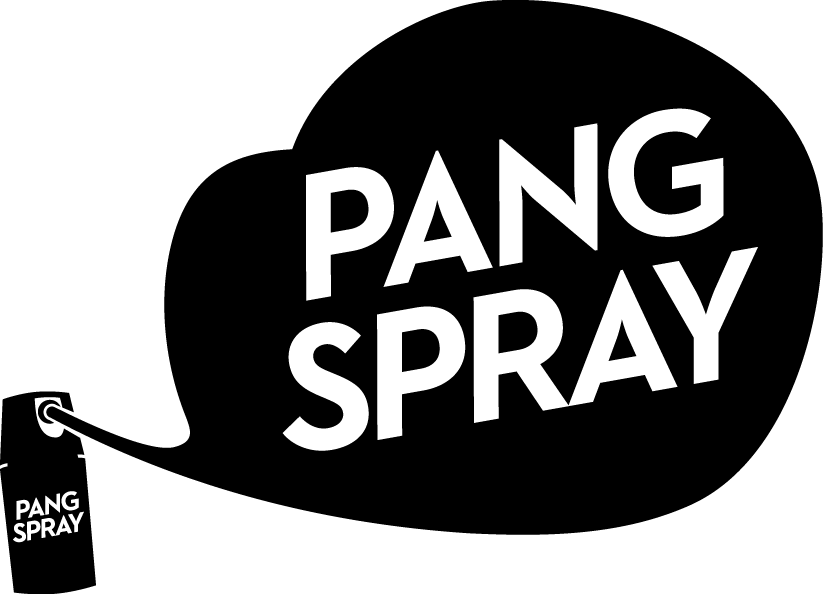

Pangspray Färgad
Den färgade varianten är avsedd att tillfälligt påverka en angripare och samtidigt lämna en färgmarkering.
40 mlFärgmarkeringTillverkad i Sverige

Pangspray är en svensk självförsvarsspray i två varianter – färgad och ofärgad. Ett smidigt komplement för dig som vill känna dig tryggare i vardagen.
Båda varianterna är utvecklade för personligt självförsvar. Välj mellan färgad spray och ofärgad spray utifrån dina önskemål.
Den färgade varianten är avsedd att tillfälligt påverka en angripare och samtidigt lämna en färgmarkering.

Den ofärgade varianten är avsedd att tillfälligt påverka en angripare utan att vara utformad för att lämna en färgmarkering.
Prisjakt-länkarna avser de två produktsidor som tillhandahållits. Kontrollera variant och aktuellt pris hos återförsäljaren.
Pangspray tillverkas i Sverige och är framtagen som en självförsvarsspray. Den är inte samma sak som pepparspray. Läs alltid aktuell produktinformation och säkerhetsanvisningar innan användning.
Produkten är märkt ”Made in Sweden” och finns i två utföranden.
Enligt tillverkarens besked från 2023 gäller funktionsgaranti upp till 96 månader från tillverkningsdatum. Kontrollera märkning och villkor för ditt exemplar.
Tryckbehållaren innehåller extremt brandfarlig aerosol. Förvara skyddat från värme och utom räckhåll för barn.
Nyfiken på produkten? Se videon och lär känna Pangspray. Videon är ett komplement till – inte en ersättning för – produktens säkerhetsinformation.
Öppna på YouTube ↗Den färgade varianten är avsedd att lämna en färgmarkering, medan den ofärgade inte är utformad för det. Läs respektive produkts information före köp.
Nej. Pangspray marknadsförs som ett alternativ till pepparspray. Produkternas sammansättning och juridiska klassificering kan skilja sig åt. Kontrollera aktuella svenska regler för just den produkt du köper.
Enligt tillverkarens besked daterat 10 mars 2023 har funktionsgarantin förlängts från 48 till 96 månader från tillverkningsdatum. Det är tillverkarens uppgift och inte en garanti om effekt i varje situation.
Följ alltid etiketten. Produkten är märkt som extremt brandfarlig aerosol. Skydda mot solljus och temperaturer över 50 °C, punktera eller bränn inte behållaren och förvara oåtkomligt för barn.
Du hittar produktlänkar till Teknikproffset och prisjämförelse hos Prisjakt på den här sidan. Lagerstatus och priser bestäms av respektive återförsäljare.
Se aktuellt sortiment och tillgänglighet hos återförsäljare.